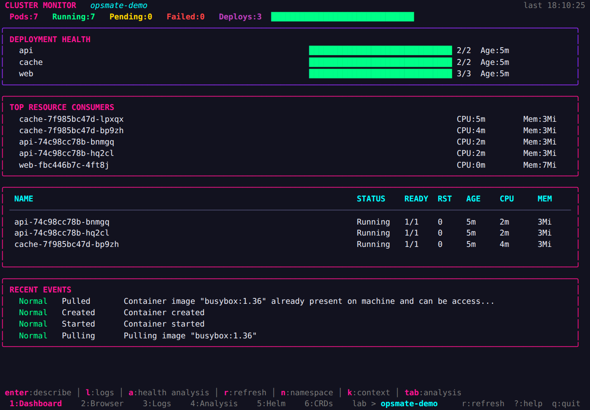
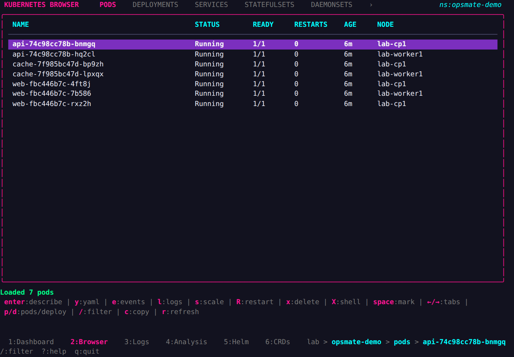
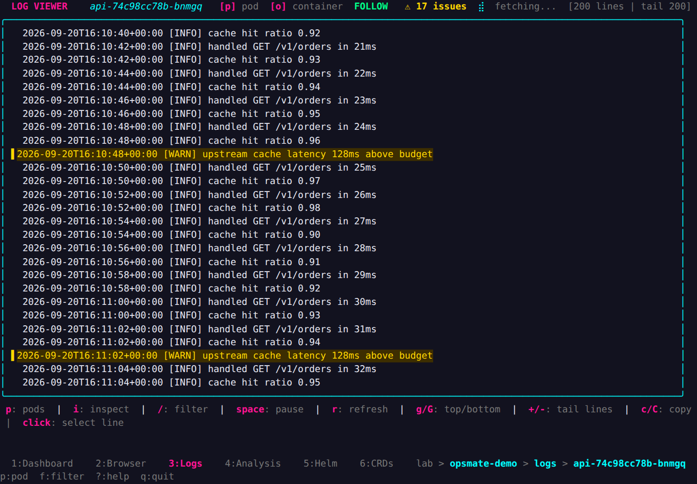
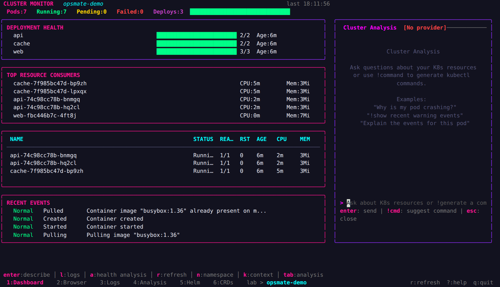

SHA-256 checksums
A checksums.txt covering every archive, published with the release.
OpsMate reads your kubeconfig and shows what is running. Nothing is installed in the cluster: no agent, no daemon, no CRD, no service account.

Six screens for the things you open a terminal to check: what is running, what broke, what the logs say, what Helm installed.
kubectl it writes for you is scoped to your namespace and quoted.Pod counts, deployment readiness, restarts, events, CPU and memory. Metrics need the Kubernetes Metrics API.
Pods, deployments, services, storage, config, RBAC, nodes and events. Describe, YAML, filter, wide columns.

Stream any container. Pause, filter, jump between errors. Click a line or drag a range, then copy it.

Ask about what you are looking at, or type ! to have a kubectl command written for you. Off until you configure a provider.

Screenshots are real terminal output, captured from a live cluster.
Download the archive for your architecture, verify it, run it.
curl -LO https://github.com/HediAbed/opsmate/releases/download/v0.1.4/opsmate_0.1.4_linux_amd64.tar.gz
curl -LO https://github.com/HediAbed/opsmate/releases/download/v0.1.4/checksums.txt
sha256sum -c checksums.txt --ignore-missing
tar xzf opsmate_0.1.4_linux_amd64.tar.gz
./opsmatearm64 builds ship under the same names. With Go 1.26.6+: go install github.com/HediAbed/opsmate/cmd/opsmate@latest
Apple silicon is darwin_arm64, Intel is darwin_amd64.
curl -LO https://github.com/HediAbed/opsmate/releases/download/v0.1.4/opsmate_0.1.4_darwin_arm64.tar.gz
curl -LO https://github.com/HediAbed/opsmate/releases/download/v0.1.4/checksums.txt
shasum -a 256 -c checksums.txt --ignore-missing
tar xzf opsmate_0.1.4_darwin_arm64.tar.gz
./opsmateGatekeeper will quarantine an unsigned download: xattr -d com.apple.quarantine ./opsmate
A zip for windows_amd64. PowerShell:
Invoke-WebRequest -OutFile opsmate.zip `
https://github.com/HediAbed/opsmate/releases/download/v0.1.4/opsmate_0.1.4_windows_amd64.zip
Expand-Archive opsmate.zip -DestinationPath .
Get-FileHash .\opsmate.exe -Algorithm SHA256
.\opsmate.exeThere is no Windows ARM build.
You need a working kubeconfig. OpsMate opens the namespace of your current context, or all namespaces when the context sets none.
A checksums.txt covering every archive, published with the release.
Sigstore bundle over the checksum file. cosign verify-blob against the repository identity.
One SBOM per archive, built with Syft during release.
GitHub attestation binding each archive to the workflow that produced it. gh attestation verify.